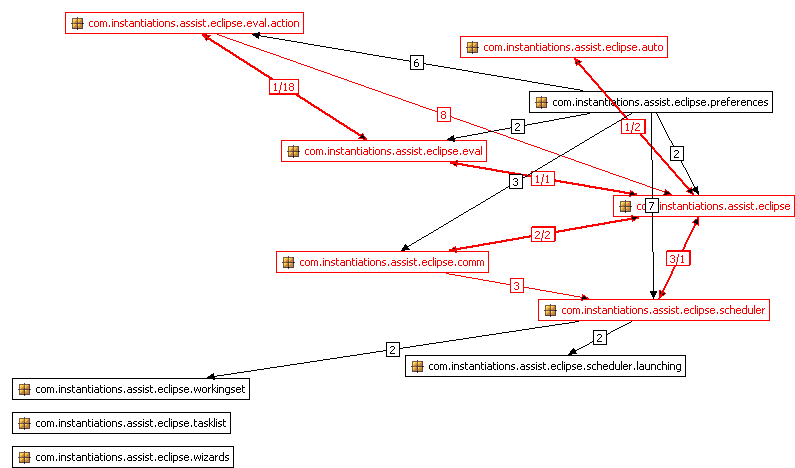
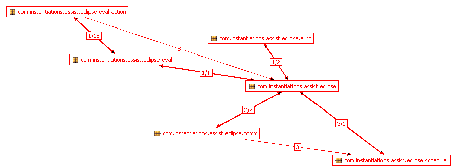

Powered by CodePro and Eclipse
Project Analysis |
[projects] [packages] [explanations] |
Project Total Classes Abstract Classes Concrete Classes Afferent Coupling Efferent Coupling Abstractness Instability Distance WSAssistSource 121 26 95 0 16 0.21 1.0 0.21
WSAssistSource
Afferent Couplings: 0 Efferent Couplings: 16 Abstractness: 0.21 Instability: 1.0 Distance: 0.21
Package Analysis |
[projects] [packages] [explanations] |

Package Total Classes Abstract Classes Concrete Classes Afferent Coupling Efferent Coupling Abstractness Instability Distance com.instantiations.assist.eclipse 4 1 3 6 19 0.25 0.76 0.01 com.instantiations.assist.eclipse.auto 5 1 4 1 13 0.2 0.93 0.13 com.instantiations.assist.eclipse.comm 23 5 18 2 17 0.22 0.89 0.11 com.instantiations.assist.eclipse.eval 4 0 4 3 25 0.0 0.89 -0.11 com.instantiations.assist.eclipse.eval.action 27 0 27 2 24 0.0 0.92 -0.08 com.instantiations.assist.eclipse.preferences 7 0 7 0 27 0.0 1.0 0.0 com.instantiations.assist.eclipse.scheduler 33 15 18 3 38 0.45 0.93 0.38 com.instantiations.assist.eclipse.scheduler.launching 5 1 4 1 7 0.2 0.88 0.07 com.instantiations.assist.eclipse.tasklist 1 0 1 0 7 0.0 1.0 0.0 com.instantiations.assist.eclipse.wizards 1 1 0 0 11 1.0 1.0 1.0 com.instantiations.assist.eclipse.workingset 11 2 9 1 19 0.18 0.95 0.13
com.instantiations.assist.eclipse
com.instantiations.assist.eclipse.auto
com.instantiations.assist.eclipse.comm
com.instantiations.assist.eclipse.eval
com.instantiations.assist.eclipse.eval.action
com.instantiations.assist.eclipse.scheduler
com.instantiations.assist.eclipse
Afferent Couplings: 6 Efferent Couplings: 19 Abstractness: 0.25 Instability: 0.76 Distance: 0.01 com.instantiations.assist.eclipse.auto
Afferent Couplings: 1 Efferent Couplings: 13 Abstractness: 0.2 Instability: 0.93 Distance: 0.13
Abstract Classes Concrete Classes Referencing Packages Referenced Packages com.instantiations.assist.eclipse.auto.AutoOp com.instantiations.assist.eclipse.auto.AutoFormat
com.instantiations.assist.eclipse.auto.AutoOpSaveListener
com.instantiations.assist.eclipse.auto.AutoOrganizeImports
com.instantiations.assist.eclipse.auto.EditorSelectionStatecom.instantiations.assist.eclipse com.instantiations.assist.eclipse
com.instantiations.assist.eclipse.core.jdt
com.instantiations.assist.eclipse.core.ui
com.instantiations.jlib.util
java.io
java.lang
org.eclipse.jdt.core
org.eclipse.jface.action
org.eclipse.jface.text.source
org.eclipse.swt.custom
org.eclipse.swt.graphics
org.eclipse.ui
org.eclipse.ui.texteditorcom.instantiations.assist.eclipse.comm
Afferent Couplings: 2 Efferent Couplings: 17 Abstractness: 0.22 Instability: 0.89 Distance: 0.11 com.instantiations.assist.eclipse.eval
Afferent Couplings: 3 Efferent Couplings: 25 Abstractness: 0.0 Instability: 0.89 Distance: -0.11
Abstract Classes Concrete Classes Referencing Packages Referenced Packages com.instantiations.assist.eclipse.eval.AboutDialog
com.instantiations.assist.eclipse.eval.CodeProEval
com.instantiations.assist.eclipse.eval.CodeProPerspectiveMenu
com.instantiations.assist.eclipse.eval.CodeProViewMenucom.instantiations.assist.eclipse
com.instantiations.assist.eclipse.eval.action
com.instantiations.assist.eclipse.preferencescom.instantiations.assist.eclipse
com.instantiations.assist.eclipse.core
com.instantiations.assist.eclipse.core.reflect
com.instantiations.assist.eclipse.core.ui
com.instantiations.assist.eclipse.core.ui.action
com.instantiations.assist.eclipse.core.ui.image
com.instantiations.assist.eclipse.eval.action
com.instantiations.jlib.license
com.instantiations.jlib.util
java.io
java.lang
java.text
java.util
org.eclipse.core.resources
org.eclipse.core.runtime
org.eclipse.jface.action
org.eclipse.jface.dialogs
org.eclipse.jface.preference
org.eclipse.jface.resource
org.eclipse.swt.events
org.eclipse.swt.graphics
org.eclipse.swt.layout
org.eclipse.swt.widgets
org.eclipse.ui
org.eclipse.ui.actionscom.instantiations.assist.eclipse.eval.action
Afferent Couplings: 2 Efferent Couplings: 24 Abstractness: 0.0 Instability: 0.92 Distance: -0.08 com.instantiations.assist.eclipse.preferences
Afferent Couplings: 0 Efferent Couplings: 27 Abstractness: 0.0 Instability: 1.0 Distance: 0.0
Abstract Classes Concrete Classes Referencing Packages Referenced Packages com.instantiations.assist.eclipse.preferences.AcknowledgementsPreferencePage
com.instantiations.assist.eclipse.preferences.DebugLogPreferencePage
com.instantiations.assist.eclipse.preferences.LicensePreferencePage
com.instantiations.assist.eclipse.preferences.MainPreferencePage
com.instantiations.assist.eclipse.preferences.OpenLogAction
com.instantiations.assist.eclipse.preferences.StartupPreferencePage
com.instantiations.assist.eclipse.preferences.VAAssistPreferencePageNone com.instantiations.assist.eclipse
com.instantiations.assist.eclipse.comm
com.instantiations.assist.eclipse.core
com.instantiations.assist.eclipse.core.ui
com.instantiations.assist.eclipse.core.ui.image
com.instantiations.assist.eclipse.core.ui.license
com.instantiations.assist.eclipse.eval
com.instantiations.assist.eclipse.eval.action
com.instantiations.assist.eclipse.scheduler
com.instantiations.jlib.license
com.instantiations.jlib.task
com.instantiations.jlib.util
java.io
java.lang
java.util
org.eclipse.core.runtime
org.eclipse.core.runtime.model
org.eclipse.help
org.eclipse.jface.action
org.eclipse.jface.preference
org.eclipse.jface.resource
org.eclipse.swt.events
org.eclipse.swt.graphics
org.eclipse.swt.layout
org.eclipse.swt.widgets
org.eclipse.ui
org.eclipse.ui.helpcom.instantiations.assist.eclipse.scheduler
Afferent Couplings: 3 Efferent Couplings: 38 Abstractness: 0.45 Instability: 0.93 Distance: 0.38 com.instantiations.assist.eclipse.scheduler.launching
Afferent Couplings: 1 Efferent Couplings: 7 Abstractness: 0.2 Instability: 0.88 Distance: 0.07
Abstract Classes Concrete Classes Referencing Packages Referenced Packages com.instantiations.assist.eclipse.scheduler.launching.ILaunchingListener com.instantiations.assist.eclipse.scheduler.launching.LaunchingManager
com.instantiations.assist.eclipse.scheduler.launching.VMInstall20
com.instantiations.assist.eclipse.scheduler.launching.VMInstallType20
com.instantiations.assist.eclipse.scheduler.launching.VMRunner20com.instantiations.assist.eclipse.scheduler com.instantiations.jlib.util
java.io
java.lang
java.net
org.eclipse.core.runtime
org.eclipse.debug.core
org.eclipse.jdt.launchingcom.instantiations.assist.eclipse.tasklist
Afferent Couplings: 0 Efferent Couplings: 7 Abstractness: 0.0 Instability: 1.0 Distance: 0.0
Abstract Classes Concrete Classes Referencing Packages Referenced Packages com.instantiations.assist.eclipse.tasklist.ShowTaskViewSaveListener None com.instantiations.assist.eclipse.core.ui
com.instantiations.jlib.util
java.lang
org.eclipse.core.resources
org.eclipse.core.runtime
org.eclipse.jdt.core
org.eclipse.uicom.instantiations.assist.eclipse.wizards
Afferent Couplings: 0 Efferent Couplings: 11 Abstractness: 1.0 Instability: 1.0 Distance: 1.0
Abstract Classes Concrete Classes Referencing Packages Referenced Packages com.instantiations.assist.eclipse.wizards.CPAbstractOpenWizardAction None com.instantiations.assist.eclipse.core.ui
java.lang
java.util
org.eclipse.core.resources
org.eclipse.jface.action
org.eclipse.jface.dialogs
org.eclipse.jface.viewers
org.eclipse.jface.wizard
org.eclipse.swt.widgets
org.eclipse.ui
org.eclipse.ui.actionscom.instantiations.assist.eclipse.workingset
Afferent Couplings: 1 Efferent Couplings: 19 Abstractness: 0.18 Instability: 0.95 Distance: 0.13
Explanations |
[projects] [packages] [explanations] |
The following are definitions of some of the terms used in this report. For the most part, these definitions are taken from the paper OO Design Quality Metrics by Robert Martin.
- Scope
- Anything that can contain types; either a package or project.
- Number of Types
- The total number of types defined within a scope.
- Afferent Coupling
- The number of types outside a scope that depend on types defined in the scope. (Sometimes abreviated as
Ca.)
- Efferent Coupling
- The number of types in a scope that depend on types defined outside the scope. (Sometimes abreviated as
Ce.)
- Abstractness
- The number of abstract types (abstract classes and interfaces) divided by the total number of types. It ranges between zero (0.0) and one (1.0), where zero indicates a completely concrete scope and one indicates a completely abstract scope.
- Instability
- The ratio of efferent coupling to the total coupling. This value is computed as
Ce / (Ca + Ce)and represents the resiliance of the scope to change. It ranges between zero (0.0) and one (1.0), where zero indicates a maximally stable scope and one indicates a maximally instable scope.
- Distance
- The normalized distance of a scope (computed as
| A + I - 1 |) from the main sequence (A + I = 1). This value represents the degree to which stability and abstractness are balanced. It ranges between zero (0.0) and one (1.0), where zero indicates a maximally balanced scope and one indicates a maximally unbalanced scope.